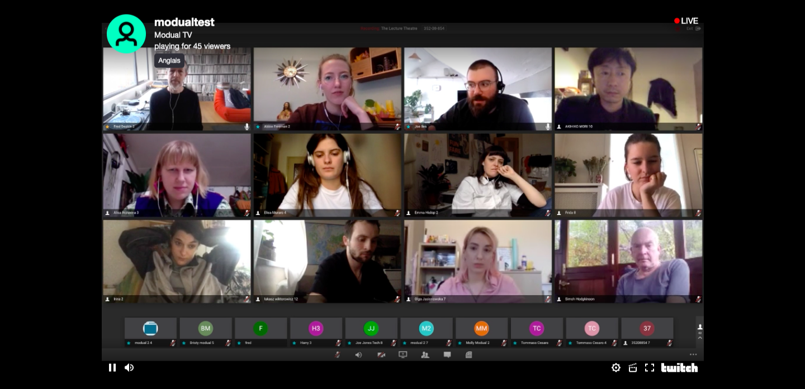
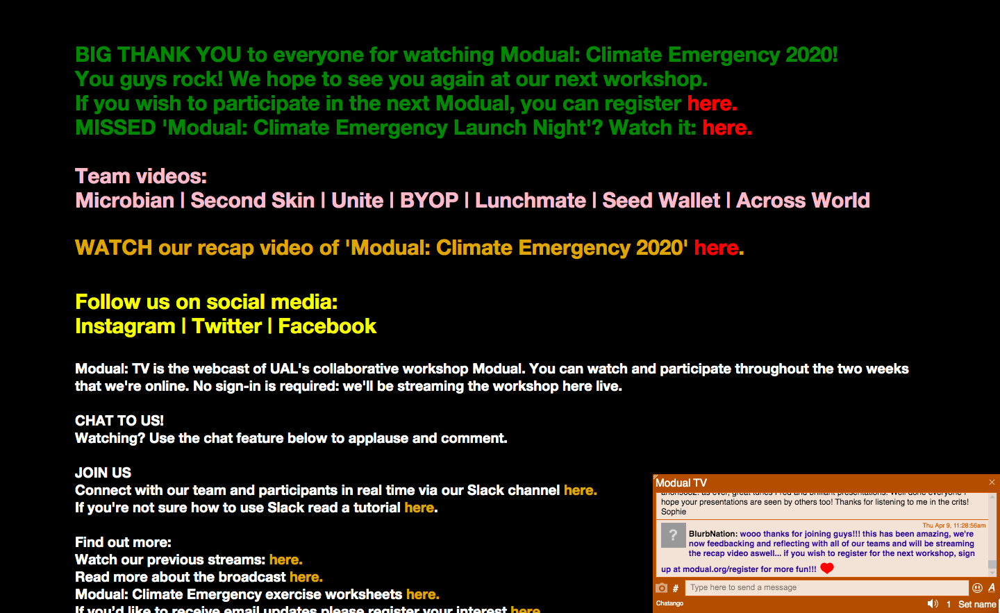
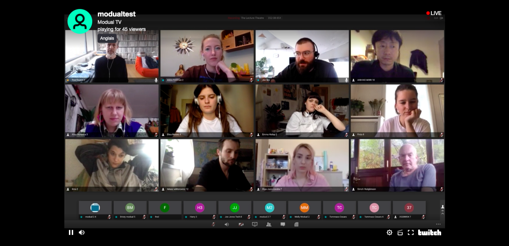
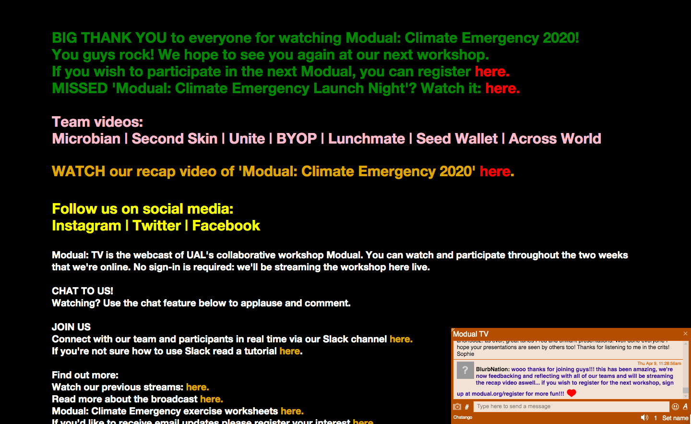

Documentation video of the workshop (above)
Screenshot of the Modual TV webpage (below)
 



Modual: Climate Emergency
Modual is the University of the Arts London’s digital collaborative workshop led by Fred Deakin and produced by Molly Gavriel. Modual: Climate Emergency has been developed in collaboration with Snootie Studios and Rice Box Studio. The workshop is a cross-disciplinary collaborative space that enables students to create projects for positive social change.
Modual: Climate Emergency was an opportunity for students to design a response to the climate emergency within two weeks. For this workshop, we also partnered with Extinction Rebellion, The Ellen MacArthur Foundation and Thomas Matthews Design to provide expertise and mentoring for the participants throughout the workshop.
This workshop was run entirely digitally and enabled us to broadcast it online to an external audience through Modual TV.
This allowed the external audience to watch the process of the projects, participate in the exercises through worksheets, listen to talks and take part in the Q&A sessions with industry experts. The aim was to remove barriers to arts and design education and to connect the student community to a wider professional and industry audience through online collaboration.
Modual TV was curated and managed by Ricebox Studio.
Visit these links to check out Modual's recent activities:
Roles:
Broadcast Curation and Management